PC Watch
https://pc.watch.impress.co.jp
PC/テクノロジーの最新情報、レポート等でPC業界を先取り
フィード

【TGS】Enterキーにピカチュウの後ろ姿！REALFORCE特別モデルが可愛すぎる ～ホロライブコラボ新2機種も発表でクリアファイル配布中[Sponsored] 1
1
PC Watch
9月17日から21日まで幕張メッセで開催中の東京ゲームショウ2026にて、東プレのゲーミングキーボード「REALFORCE GX1 Plus Keyboard Pikachu Edition(ピカチュウエディション)」が発表された。
19時間前
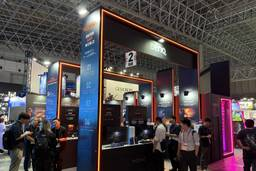
ベンキューのゲーミングモニターが東京ゲームショウで異彩を放つ理由 ～実売10万円前後の240Hz有機EL「EX271QMZ」の没入感に迫る[Sponsored] 2
PC Watch
東京ゲームショウ2026で多数展示されているゲーミングモニターの中でもベンキュージャパンの製品そして展示が異彩を放っている。
19時間前
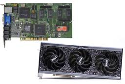
【今すぐ読みたい！人気記事】約30年でGPUはどのぐらい速くなったの？歴史を振り返りつつぜ～んぶ計算してみた - PC Watch 1
PC Watch
今年(2024年)1月の「最新CPUは50年前の＿＿万倍速い！進化の歴史を辿ってみた」の続編として、「PC用GPUの栄枯盛衰」の話を書いてほしい、というお題をまた編集部から頂いた。
19時間前
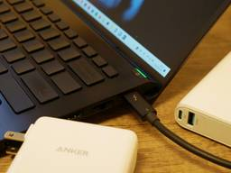
【今すぐ読みたい！人気記事】知っておきたいUSB PDの基礎。モバイルバッテリと充電器、ノートPCを充電するなら出力何Wものを用意すべきか？ - PC Watch
PC Watch
USBを冠する電力供給規格にはさまざまなものがあるが、ようやくUSB PD規格が事実上の標準として定着しそうではある。USB PDは、電力を必要とするデバイスに、電力を供給するための規格で、USB規格や仕様を策定している団体USB Implementers Forumにより策定され、Power Deliveryの頭文字をとって名付けられたネーミングだ。
19時間前
ガチくんに! 第432回切り抜き「桜える子レジェンドに/おじリーグ 石井プロ出禁/SFL大波乱」
PC Watch
※毎週木曜日にプロ格闘ゲームプレイヤーであるガチくんをパーソナリティに迎え、ストリートファイター6攻略企画「ガチくんに!」をTwitchとYouTubeで配信しています。レギュラー出演者はぷげら、奥村茉実。ここでは当日放送したおおまかな内容を紹介するとともに、YouTubeにアップロードした切り抜きとアーカイブの動画を掲載しています。
1日前
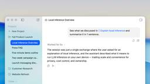
「LM Studio Bionic」、AIが忘れた指示を思い出す新機能 4
PC Watch
大規模なタスクでAIが過去のチャット内容を忘れてしまうのを防げる機能「Introspection」が、ローカルAIエージェントアプリ「LM Studio Bionic」に追加された。Element Labsが9月17日に発表した。
1日前
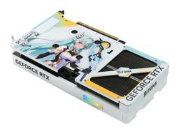
PALIT、日本発キャラ「RiTONA」をプリントしたRTX 5060 Tiビデオカード
PC Watch
クリスタルのように輝くマントに、ミントグリーンの髪の少女。PALITは9月18日(台湾時間)、デジタルアンバサダー「RiTONA」をあしらった特別仕様のビデオカード「GeForce RTX 5060 Ti 8GB RiTONA OC」を発表した。発売日および価格は明らかにされていない。
1日前
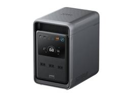
Anker、従来より小型/軽量化した容量2,010Whのポータブル電源。大型家電も駆動可能
PC Watch
アンカー・ジャパンは、コンパクト設計ながら冷蔵庫など大型家電の長時間稼働にも対応するポータブル電源「Anker Solix S2000 Portable Power Station」を9月23日に発売する。価格は19万9,900円。
1日前
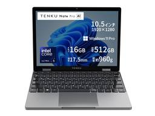
960gの10.51型2in1にNPU搭載！「TENKU Note Pro AI」今なら25%オフ 1
PC Watch
天空は9月18日、CPUにCore Ultra 5 125Uを搭載した10.51型の2in1「TENKU Note Pro AI」を受注開始した。出荷は9月24日より順次行なう。価格は17万6,800円だが、7日間限定で直販のハイビームでは25%オフの13万2,600円、Amazonでは15%オフの15万280円となる。
1日前
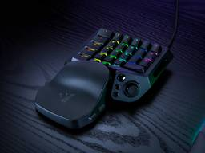
Razer、光学式アナログスイッチでラピッドトリガー対応の左手用ゲーミングキーボード 2
PC Watch
Razerは9月17日、光学式アナログスイッチやサムスティックなどを備えた左手用ゲーミングデバイス「Razer Tartarus V2 Pro」を発表した。国内では9月の発売を予定しており、価格は3万3,280円。
1日前
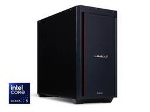
パソコン工房、Core Ultra 5 225F×RTX 50搭載ゲーミングPC [Sponsored]
PC Watch
パソコン工房を運営するユニットコムは、ゲーミングPCブランドのLEVEL∞から、Core Ultra 5 225FとGeForce RTX 5060 Tiを搭載するデスクトップPC「LEVEL-R789-225F-SKX」およびGeForce RTX 5070を搭載する「LEVEL-R789-225F-TKX」を発売した。標準構成時の直販価格は順に29万4,800円、35万9,800円。
1日前
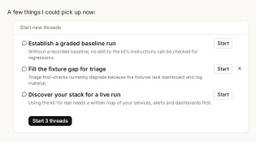
Claude Codeのプロジェクトが刷新、「あとはよろしく」で並行作業し結果を生む 39
PC Watch
人間がタスクを分割してClaudeに手渡し、その結果をまたつなぎ合わせる手間から解放される。Anthropicは9月17日(米国時間)、Claude Codeの「プロジェクト」機能を刷新してベータ版として提供を開始した。Claude Codeでクラウドセッションを利用しており、かつWeb版/デスクトップ版で既存のプロジェクトを持たない一部のPro/Maxプランの契約者から展開する。
2日前
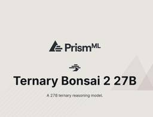
Qwen3.8-27Bを9分の1に圧縮も性能98.2%維持の「Bonsai 2 27B」 98
PC Watch
27B(270億)パラメータ級の性能を、わずか5.9GBのメモリに収めた驚異のモデルが登場した。PrismMLは9月17日(米国時間)、Qwen3.8-27Bをベースに3値量子化を施したマルチモーダルLLM「Ternary Bonsai 2 27B」を発表し、そのオープンウェイト(モデルの重み)をHugging Faceで公開した。ライセンスはApache License 2.0。
2日前
【本日みつけたお買い得品】リポビタンDの10本セットが20%引き。タウリン1,000mg配合！
PC Watch
Amazonにおいて、大正製薬のドリンク剤がお買い得だ。タウリン1,000mgを配合する「リポビタンD」(100mL)は、6本セットが15%引きクーポンで156円引きの882円、10本セットが20%引きクーポンで290円引きの1,160円、30本セットが990円引きクーポンで3,368円、50本セットが1,904円引きクーポンで5,076円にて購入できる。
2日前
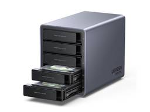
【本日みつけたお買い得品】RAID対応の5ベイ外付けHDDケースが9,309円引き
PC Watch
Amazonにおいて、UGREENの外付けHDDケース「5 Bay USB C RAID Hard Drive Enclosure」が9月10日の価格から9,309円引きで、2万1,690円にて購入可能だ。
2日前
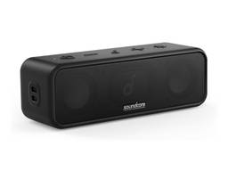
【本日みつけたお買い得品】屋外で使えるAnker製Bluetoothスピーカーが2千円引き
PC Watch
Amazonにおいて、AnkerのBluetoothスピーカー「Soundcore 3」が直近価格から2,000円引きで、4,990円にて購入できる。
2日前